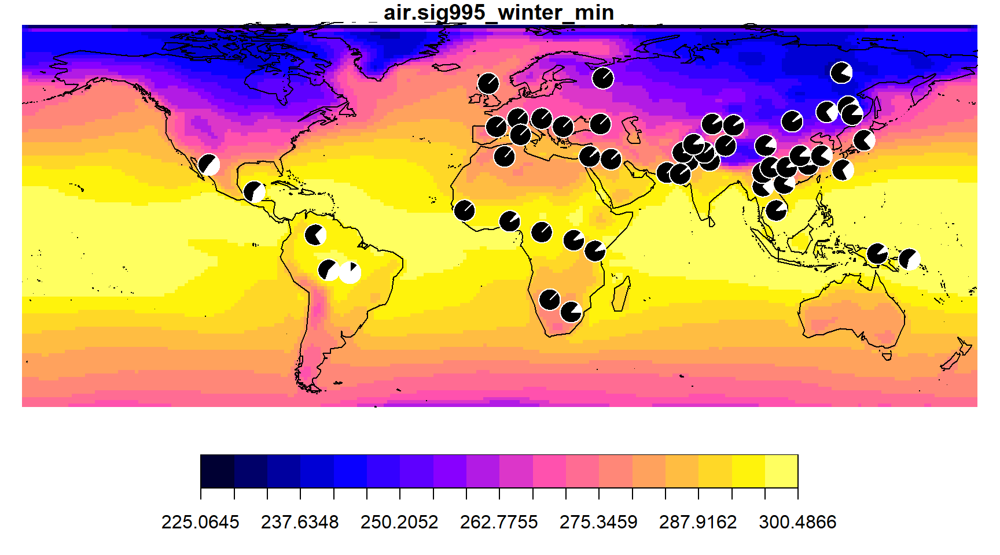
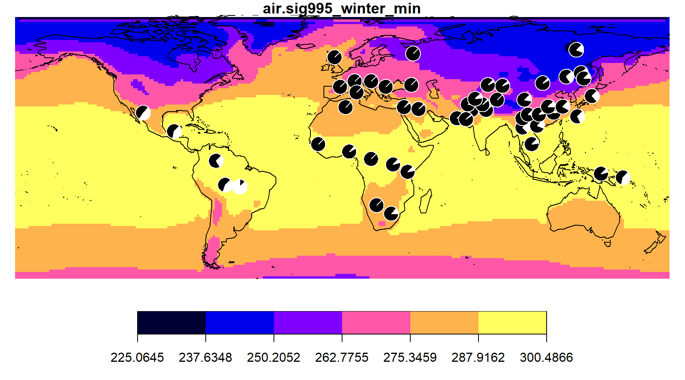
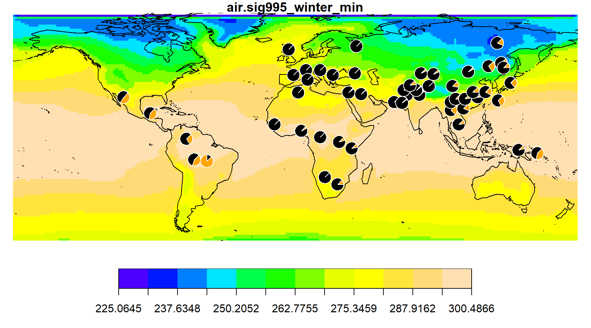
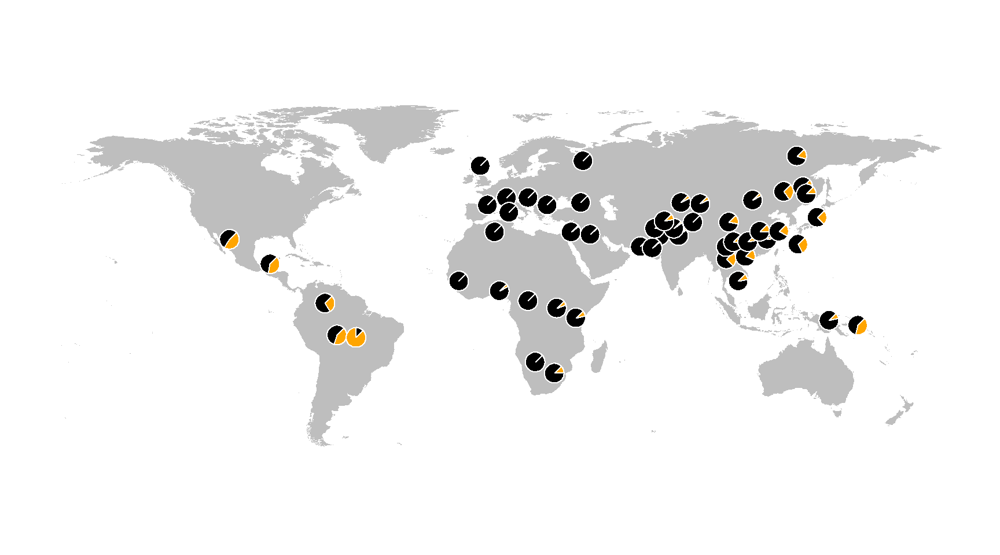

This short vignette demonstrates how to use the RGGV package to create both interactive cluster maps of SNP allele frequencies and environmental choropleth maps of the type seen in Hancock et al. 2011.
The default behavior of the ggv function is to create interactive cluster maps. The function will download human population SNP frequency data from one of the inlcuded preset databases of the Geography of Genetic Variants Browser (GGV: HGDP, POPRES_Euro, 1000 Genome, and ExAC) or estimate the frequency data from a user-provided VCF file (see below). If no database is provided to the ggv function (i.e., db=NULL), a menu will appear with a list of the possible databases to choose from.
library(RGGV)
ggv(chr=7, pos=50443603, db="HGDP")## SNP pos: chr7:50443603## Ancestral state: A
The interactive “cluster” nature of the maps will become apparent once you hover over, zoom in on, or click on one of the pie charts.
Note: If either allele in the data matches the known ancestral allele, then the colors on the map reflect ancestral and derived states. Otherwise, the states will be colored as State 1 and State 2.
To create a dataframe of the population allele frequency data, instead of a cluster map, use the output="table" argument of ggv.
freq_table <- ggv(chr=7, pos=50443603, db="HGDP", output="table")## found SNP chr7:50443603freq_table[1:5,]## Pop lat long nobs freq_A freq_G
## 1 Mongola 45.00000 111 22 0.0455 0.9545
## 2 Hazara 33.49856 70 44 0.1136 0.8864
## 3 Han 32.26567 114 68 0.1324 0.8676
## 4 Burusho 36.49839 74 50 0.1000 0.9
## 5 Uygur 44.00000 81 20 0.0500 0.95This table shows the name (Pop), geographic coordinates (lat, long), number of observed chromosomes (nobs), and population frequency for each allele.
To add an environmental variable to the table, first download the data from the NCEP-NCAR database. The data sets are large, so this could take a minute or so if downloading the data for the first time.
grid <- seasonAve()For a complete list of NCEP-NCAR variables, see the help documentation for the NCEP.gather function in the RNCEP package.
Using the function interpvar, you can then interpolate over this grid to the population coordinates in the freq_table dataframe.
freq_table <- interpvar(grid, freq_table)
freq_table[1:10,]## Pop lat long nobs freq_A freq_G air.sig995_winter_min
## 1 Mongola 45.000000 111.0 22 0.0455 0.9545 251.7319
## 2 Hazara 33.498556 70.0 44 0.1136 0.8864 270.2090
## 3 Han 32.265668 114.0 68 0.1324 0.8676 271.6034
## 4 Burusho 36.498386 74.0 50 0.1000 0.9 256.9061
## 5 Uygur 44.000000 81.0 20 0.0500 0.95 261.0526
## 6 Miao 28.000000 109.0 20 0.1000 0.9 276.6948
## 7 Tu 36.000000 101.0 20 0.1500 0.85 258.7496
## 8 Sardinian 40.000000 9.0 56 0.0000 1 285.1169
## 9 Yoruba 7.995095 5.0 42 0.0476 0.9524 294.8099
## 10 Brahui 30.498715 66.5 50 0.0000 1 277.8200Any number of environmental data columns can be added to the freq_table in this manner.
grid2 <- seasonAve(ext="max")
freq_table <- interpvar(grid2, freq_table)
freq_table[1:5,]## Pop lat long nobs freq_A freq_G air.sig995_winter_min
## 1 Mongola 45.00000 111 22 0.0455 0.9545 251.7319
## 2 Hazara 33.49856 70 44 0.1136 0.8864 270.2090
## 3 Han 32.26567 114 68 0.1324 0.8676 271.6034
## 4 Burusho 36.49839 74 50 0.1000 0.9 256.9061
## 5 Uygur 44.00000 81 20 0.0500 0.95 261.0526
## air.sig995_winter_max
## 1 258.8313
## 2 277.2501
## 3 280.1742
## 4 263.7296
## 5 267.4125To create a choropleth map of the environmental data and add pie charts of the allele frequency data, first use the envmap function on the environmental data stored in grid. Then use the addpie function on the frequency data stored in the freq_table dataframe.
envmap(grid)
addpie(freq_table, cols=c("black", "white"))
To make the same choropleth map on a coarser environmental grid, specify fewer colors with the ncol argument.
envmap(grid, ncol=6)
addpie(freq_table, cols=c("black", "white"))
You can also specify your own color palette using the col argument. For example,
envmap(grid, col=topo.colors(12))
addpie(freq_table)
To make a plain map (similar to those appearing in the GGV), you can use the same envmap function, but without providing an environmental grid.
envmap()
addpie(freq_table)
The ggvscaling argument of the addpie funtion is to provide the same pie chart scaling that the GGV uses for rare variants.
The Print command of many web browsers will allow you to save a cluster map as a PDF file. Choropleth maps can be saved by using the Export feature in RStudio, or in R, by using a function for one of the graphics devices, such as pdf, jpeg or png, as in the example shown below.
pdf(file="map.pdf")
envmap(grid)
addpie(freq_table)
dev.offIn addition to the genetic data provided in the GGV databases, the user can map their own genetic data. To do this will require providing the following three files:
The XML files need to be named with the same filename prefix used for the gzippped VCF file and stored in the same directory. For example, if the VCF filename is genodata.vcf.gz (prefix genodata) the indiv_label XML filename should be genodata.indiv_label.xml and the pop_geo XML filename should be genodata.pop_geo.xml.
To map the frequency data, the ggv function can be used as above, substituting the vcf argument for the db argument, as shown here.
ggv(chr=7, pos=50443603, vcf="http://genome-data.cri.uchicago.edu/ahga/allpops_auto_maf0.005geno0.1.vcf.gz")In the example indiv_label XML file, each sample has two Population tags with two different level attributes. For the HGDP samples in this example, there is a Population tag for each sample’s population name (level=1) and superpopulation, the name describing the population’s region/continent (level=2). In a different situation, the different levels could be used to describe a location from which the individual was sampled and a population to which the individual historically belongs. Any number of population levels can be given and the data can then be analyzed/mapped at each level of granularity.